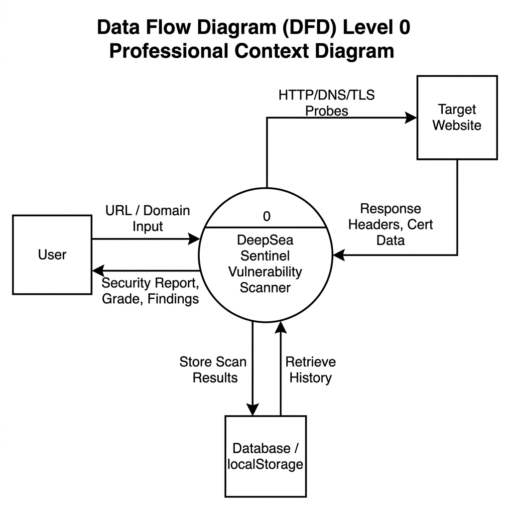
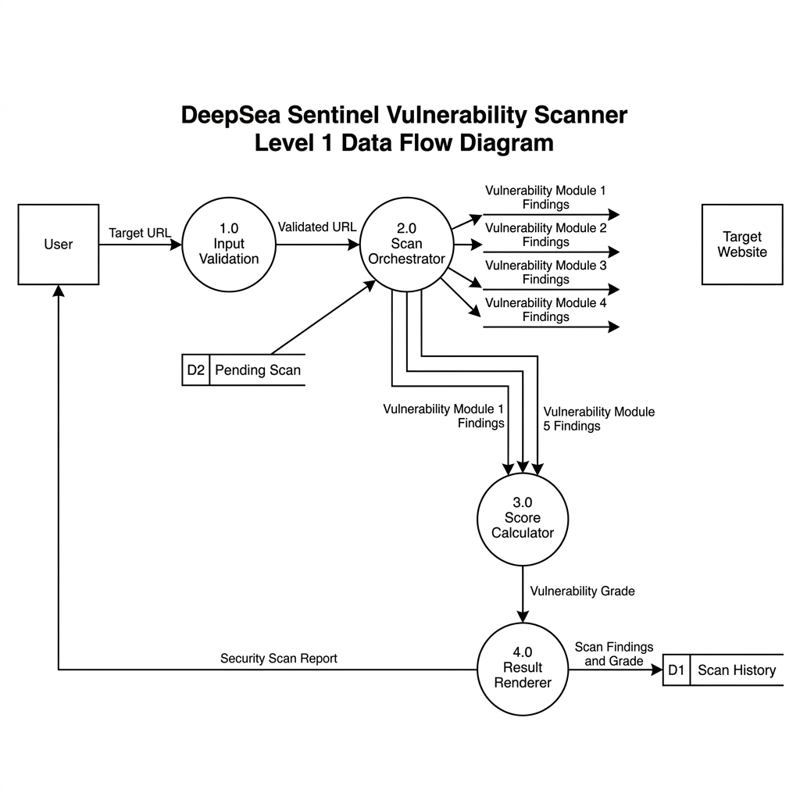
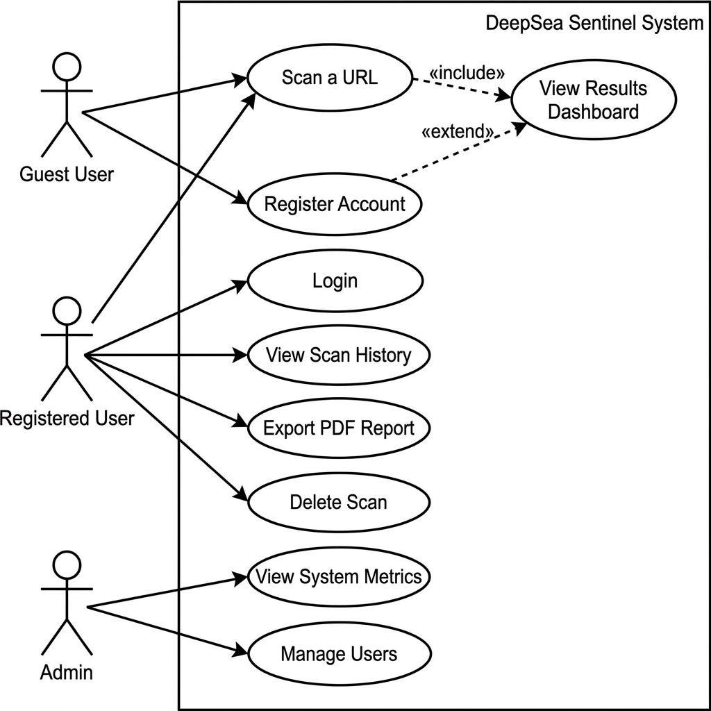
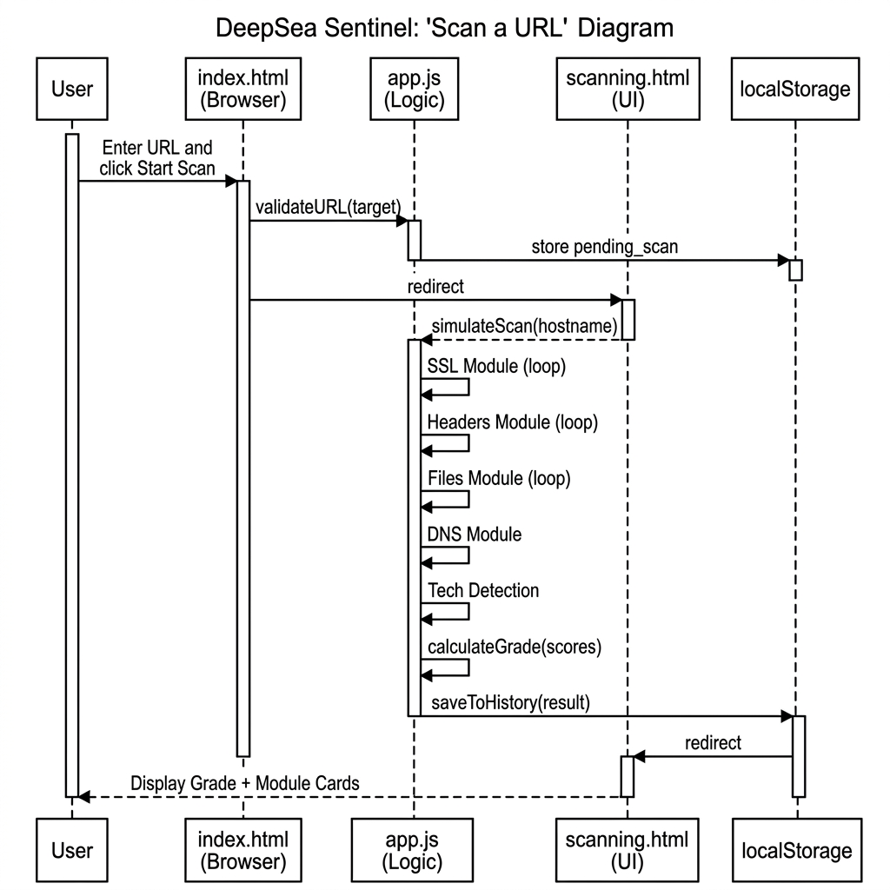
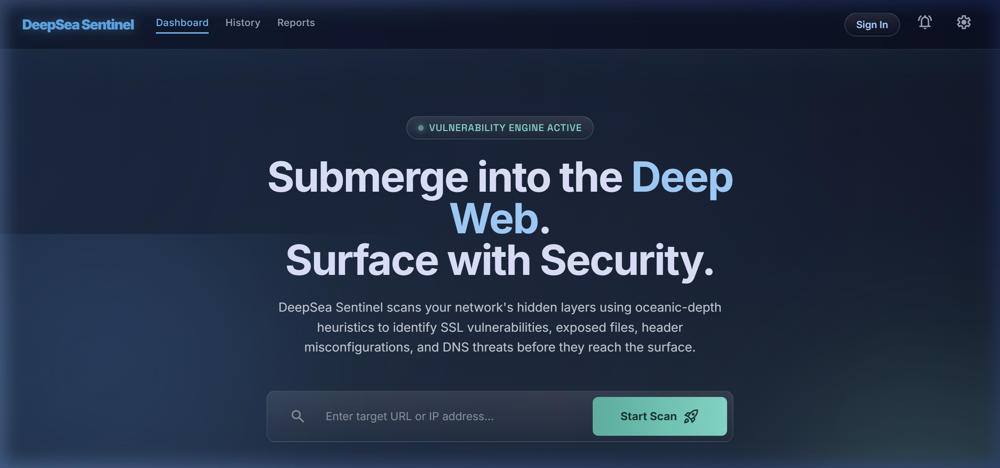
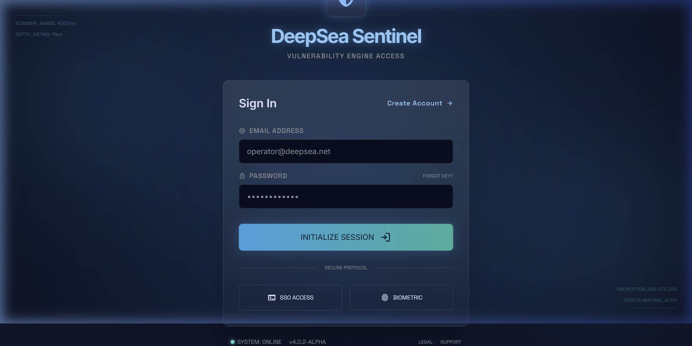
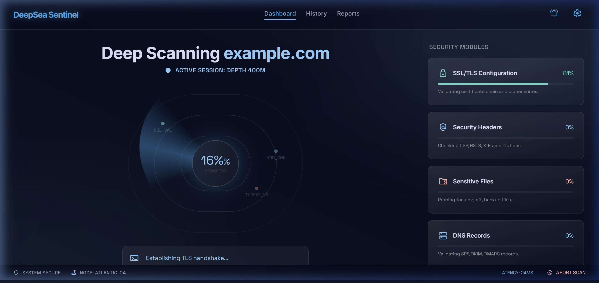
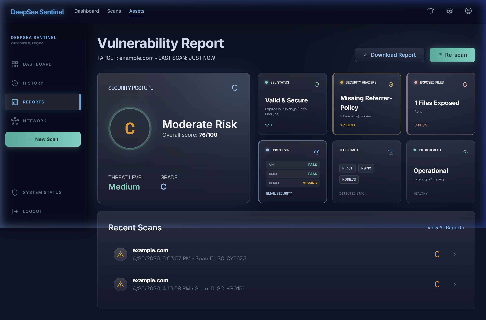
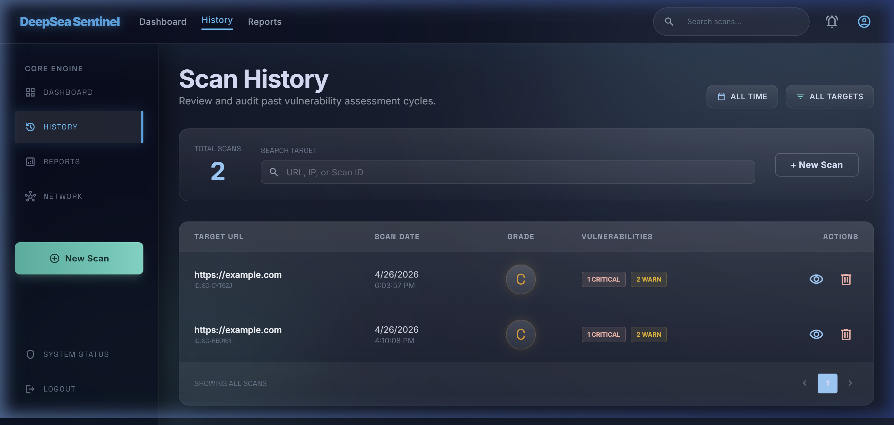
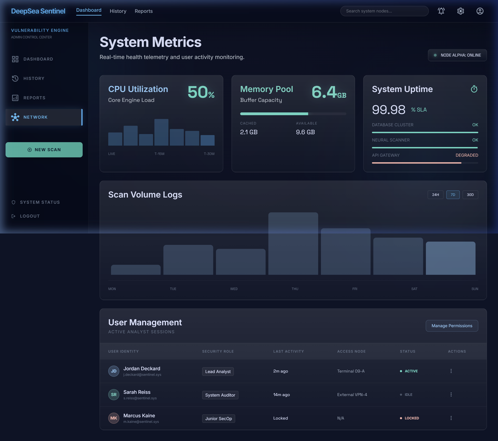

| INDEX | ||
| Sr. No. | Title | Page No. |
|---|---|---|
| 1 | Brief Introduction of the project: Aim, Scope, Objective etc.
| 4 |
| 2 | Feasibility study of the project.
| 6 |
| 3 | Functional and Non Functional Requirements.
| 8 |
| 4 | Software Requirements and Specifications (SRS)
| 10 |
| 5 | Data Flow diagrams (DFD)
| 12 |
| INDEX (continued) | ||
| Sr. No. | Title | Page No. |
|---|---|---|
| 6 | Use case diagrams
| 15 |
| 7 | Sequence diagrams
| 17 |
| 8 | Coding and Implementation
| 19 |
| 9 | Unit and System Testing
| 25 |
| 10 | RMMM plan.
| 27 |
| Course Name & Code | Software Engineering BECCS2C025 | ||
| Academic Term | 2025-26 | ||
| Student Enrolment No. | 24BECCS47 | Batch | 2024-2028 |
| Student Name | Satyam Kumar Chauhan | ||
| Objective/Title | |
| 1 |
Introduction to DeepSea Sentinel — Vulnerability Scanner
DeepSea Sentinel is a web-based vulnerability scanner dashboard that allows users to enter any URL or domain name and receive an automated, multi-module security posture analysis. The tool simulates the information-gathering phase of a security audit by checking for SSL/TLS weaknesses, missing HTTP security headers, exposed sensitive files, insecure DNS email records, and detectable technology stack components. AimTo design and develop a browser-based security analysis tool that gives users a quick, comprehensive, and actionable snapshot of a website's security posture using a single-click scanning workflow. Scope
Objectives
|
| About | ||||||||||||||||
1.5 Problem StatementMost website owners — small businesses, students, startups — have no visibility into their web application's security posture. Enterprise-grade tools (Qualys, Nessus) are expensive; free tools like Mozilla Observatory cover only a subset of checks without a unified, readable UI. DeepSea Sentinel fills this gap with a zero-cost, single-click, multi-module scanner with professional-grade reporting. 1.6 Key Features
1.7 Target Users
|
| Course Name & Code | Software Engineering BECCS2C025 | ||
| Academic Term | 2025-26 | ||
| Student Enrolment No. | 24BECCS47 | Batch | 2024-2028 |
| Student Name | Satyam Kumar Chauhan | ||
| Objective/Title | ||||||||||||||||||||||||||||
| 2 |
Feasibility Study of the Project
2.1 Technical FeasibilityThe system is built entirely with free, browser-native technologies:
Conclusion: Technically feasible. All modules use standard APIs and free services. 2.2 Operational FeasibilitySingle URL input → one-click scan → visual grade + module breakdown. No technical expertise required. Deployable to GitHub Pages, Vercel, or Netlify at zero cost. Conclusion: Highly operable. Minimal friction UX. |
|||||||||||||||||||||||||||
| About | ||||||||||||||||||||||||||||||||||||
2.3 Economic Feasibility
2.4 Schedule Feasibility
Conclusion: Comfortably achievable within the academic semester timeline. | ||||||||||||||||||||||||||||||||||||
| Course Name & Code | Software Engineering BECCS2C025 | ||
| Academic Term | 2025-26 | ||
| Student Enrolment No. | 24BECCS47 | Batch | 2024-2028 |
| Student Name | Satyam Kumar Chauhan | ||
| Objective/Title | |
| 3 |
Functional and Non-Functional Requirements
3.1 Functional Requirements
|
| About |
3.2 Non-Functional Requirements
|
| Pseudocode / Algorithm |
FUNCTION calculateOverallScore(moduleResults):
INPUT: Results from all five scan modules
OUTPUT: Grade letter (A-F) and numeric score (0-100)
weights = { ssl:30, headers:25, files:25, dns:10, tech:10 }
FOR EACH module IN [ssl, headers, files, dns, tech]:
moduleScore = evaluateModule(module.results)
weightedSum += moduleScore * weights[module] / 100
overallScore = ROUND(weightedSum)
IF overallScore >= 90 THEN grade = "A" (Excellent)
IF overallScore >= 70 THEN grade = "B" (Good)
IF overallScore >= 50 THEN grade = "C" (Fair)
IF overallScore >= 30 THEN grade = "D" (Poor)
ELSE grade = "F" (Critical)
RETURN { grade, overallScore, moduleBreakdown }
END FUNCTION
|
| Course Name & Code | Software Engineering BECCS2C025 | ||
| Academic Term | 2025-26 | ||
| Student Enrolment No. | 24BECCS47 | Batch | 2024-2028 |
| Student Name | Satyam Kumar Chauhan | ||
| Objective/Title | |||||||||||||||||||||||||||||||||||||||||||||||
| 4 |
Software Requirements and Specifications (SRS)
4.1 Product PerspectiveDeepSea Sentinel is a standalone front-end web application operating entirely in the browser. It acts as a lightweight alternative to enterprise tools like Qualys or Nessus. 4.2 User Classes
4.3 Operating Environment
|
||||||||||||||||||||||||||||||||||||||||||||||
| About | |||||||||||||||||||||||||||||||||
4.4 Data Dictionary
4.5 Constraints & Assumptions
|
| Course Name & Code | Software Engineering BECCS2C025 | ||
| Academic Term | 2025-26 | ||
| Student Enrolment No. | 24BECCS47 | Batch | 2024-2028 |
| Student Name | Satyam Kumar Chauhan | ||
| Objective/Title | |
| 5 | Data Flow Diagrams (DFD) |
| Flowchart/Diagram/Screenshots |
5.1 DFD Level 0 (Context Diagram) Fig. 5.1 — Level 0 DFD Diagram Explanation: The Level 0 diagram presents DeepSea Sentinel as a single process. Three entities interact: the User (URL input, receives report), the Target Website (HTTP/DNS/TLS responses), and localStorage (scan history storage). |
| Flowchart/Diagram/Screenshots |
5.2 DFD Level 1 Diagram Fig. 5.2 — Level 1 DFD Diagram Explanation: Level 1 decomposes into four sub-processes: 1.0 Input Validation, 2.0 Scan Orchestrator, 3.0 Score Calculator, and 4.0 Result Renderer. |
| About | ||||||||||||||||||||||||
5.3 Level 2 DFD — Scan Orchestrator ExpansionThe Level 2 DFD expands Process 2.0 to show how the five modules operate:
|
| Course Name & Code | Software Engineering BECCS2C025 | ||
| Academic Term | 2025-26 | ||
| Student Enrolment No. | 24BECCS47 | Batch | 2024-2028 |
| Student Name | Satyam Kumar Chauhan | ||
| Objective/Title | |
| 6 | Use Case Diagrams |
| Flowchart/Diagram/Screenshots |
|
 Fig. 6.1 — Use Case Diagram for DeepSea Sentinel Explanation: Three actors — Guest, Registered User, and Admin. Guest scans URLs and views results. Registered Users access history and export PDFs. Admins access system metrics. |
| About | ||||||||||||||||||||||||
Use Case Description — UC-01: Scan a URL
Use Case Description — UC-02: Export PDF Report
|
| Course Name & Code | Software Engineering BECCS2C025 | ||
| Academic Term | 2025-26 | ||
| Student Enrolment No. | 24BECCS47 | Batch | 2024-2028 |
| Student Name | Satyam Kumar Chauhan | ||
| Objective/Title | |
| 7 | Sequence Diagrams |
| Flowchart/Diagram/Screenshots |
|
 Fig. 7.1 — Sequence Diagram: Scan a URL Flow Explanation: User enters URL on index.html → browser calls validateURL() in app.js → stores pending scan in localStorage → redirects to scanning.html → simulateScan() runs 5 modules → calculates grade → saves result → redirects to dashboard.html. |
| About | |||||||||||||||||||||||||||||||||||||||||||
7.2 PDF Report Export — Step Table
|
| Course Name & Code | Software Engineering BECCS2C025 | ||
| Academic Term | 2025-26 | ||
| Student Enrolment No. | 24BECCS47 | Batch | 2024-2028 |
| Student Name | Satyam Kumar Chauhan | ||
| Objective/Title | ||||||||||||||||||||||
| 8 |
Coding and Implementation
8.1 Technology Stack
8.2 Project File Structuredeepsea-sentinel/
├── index.html ← Landing page: URL input + hero
├── scanning.html ← Sonar animation + progress bars
├── dashboard.html ← Grade circle + module cards
├── history.html ← Searchable scan history table
├── report.html ← PDF report preview + export
├── auth.html ← Sign In / Create account
├── admin.html ← System metrics + user mgmt
└── js/
└── app.js ← Core DSS namespace
|
|||||||||||||||||||||
| Pseudocode / Algorithm |
Seeded Pseudo-Random Number Generator (app.js)function seededRng(seed) {
let s = seed;
return function() {
s = (s * 1664525 + 1013904223) & 0xffffffff;
return (s >>> 0) / 0xffffffff;
};
}
function hashStr(str) {
let h = 0;
for (let i = 0; i < str.length; i++)
h = (Math.imul(31, h) + str.charCodeAt(i)) | 0;
return Math.abs(h);
}
localStorage Persistence (app.js)storage: {
get(key) { return JSON.parse(localStorage.getItem(key)); },
set(key, val) { localStorage.setItem(key, JSON.stringify(val)); },
addToHistory(scan) {
const hist = this.get('scan_history') || [];
hist.unshift(scan);
if (hist.length > 50) hist.splice(50);
this.set('scan_history', hist);
}
}
Grade Calculation (app.js)function calcGrade(ssl, hdrs, files, dns, tech) {
const w = ssl*0.30 + hdrs*0.25 + files*0.25
+ dns*0.10 + tech*0.10;
const score = Math.round(w);
let grade;
if (score >= 90) grade = 'A';
else if (score >= 70) grade = 'B';
else if (score >= 50) grade = 'C';
else if (score >= 30) grade = 'D';
else grade = 'F';
return { score, grade };
}
|
| Flowchart/Diagram/Screenshots |
Landing Page (index.html) Fig. 8.1 — DeepSea Sentinel Landing Page Authentication Page (auth.html) Fig. 8.2 — Sign In Page |
| Flowchart/Diagram/Screenshots (continued) |
Scanning Page (scanning.html) Fig. 8.3 — Sonar Scanner with Module Progress Bars Dashboard (dashboard.html) Fig. 8.4 — Vulnerability Dashboard: Grade + Module Cards |
| Flowchart/Diagram/Screenshots (continued) |
Scan History (history.html) Fig. 8.5 — Searchable Scan History Table |
| Flowchart/Diagram/Screenshots (continued) |
Admin Panel (admin.html) Fig. 8.6 — Admin Control Center: CPU, Memory, Uptime, Services |
| Course Name & Code | Software Engineering BECCS2C025 | ||
| Academic Term | 2025-26 | ||
| Student Enrolment No. | 24BECCS47 | Batch | 2024-2028 |
| Student Name | Satyam Kumar Chauhan | ||
| Objective/Title | ||||||||||||||||||||||||||||||||||||||||||||||||||||||||
| 9 |
Unit and System Testing
9.1 Unit Test Cases
|
|||||||||||||||||||||||||||||||||||||||||||||||||||||||
| About | |||||||||||||||||||||||||||||||||||||||||||||
9.2 System / Integration Test Cases
|
| Course Name & Code | Software Engineering BECCS2C025 | ||
| Academic Term | 2025-26 | ||
| Student Enrolment No. | 24BECCS47 | Batch | 2024-2028 |
| Student Name | Satyam Kumar Chauhan | ||
| Objective/Title | ||||||||||||||||||||||||||||||||||||||||||||||
| 10 |
RMMM Plan
10.1 Risk Identification and Mitigation
|
|||||||||||||||||||||||||||||||||||||||||||||
| About | ||||||||||||||||||||||||||||||||||||
10.2 Monitoring Plan
10.3 Management Plan
|
| References |
|